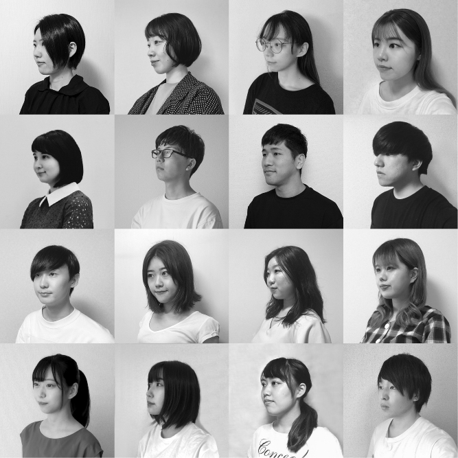

人と人、人とモノ、人とマチをつなぐコミュニケーションデザインの可能性を研究する研
究室です。表現だけにとどまらず、「デザインの力」でモノやマチの魅力を輝かせたいと
思う方、当研究室で一緒に学んでいきましょう。
総合大学であること、工学系システムデザイン学部の学科であることを活かし、様々な学
生との交流の中から、視覚伝達領域にとらわれないデザイン界の未来を支える新しい力を
生み出していきます。
菊竹雪
スタジオ紹介
ヴィジュアルコミュニケーションデザインと聞いて、何を思い浮かべますか。
私たちはグラフィックデザインを中心として取り扱ってはいますが、メディア・プロダク トの垣根を超えて最も適したデザインは何かつねに考えています。 デザインは、そのとぎどきで求められるものが違い、それに合わせて変わり続けるしかあ りません。その柔軟さが私たちのアイデンティティで、私たちが考えるヴィジュアルコミ ュニケーションデザインです。
- 「渋谷駅前再開発におけるメディアの開発と展開に関する研究」
一般社団法人渋谷駅前マネジメント, 2016〜 - 「オノマトペを用いた静電植毛の可視化研究」
東京都立産業技術研究センター, 2019〜 - 「2020TDM推進プロジェクトシンボルマーク制作」
東京都オリンピック・パラリンピック準備局, 2019 - 「パリ東京タンデム2018における両都市間大学連携ポスター交換プロググラム事業」
東京都生活文化局, 2018 - 「ヘルプマークのメディア広報展開の提案」
東京都福祉保健局, 2017〜2018 - 「菊竹雪のスーパーグラフィックス」青幻舎, 2018
建築・環境・空間にかかわるグラフィックデザインの仕事をまとめた書籍。
掲載プロジェクト：東京ミッドタウン、新丸ビル、イタリア文化会館、 札幌駅再開発、渋谷駅前再開発プロジェクトほか
写真：http://www.seigensha.com/books/978-4-86152-677-0
学生の声
M２ 廣田 海洋
安土桃山時代の茶会から前人の思想を考察し、それを現代の新しい掛軸として提案するにはどうしたらいいか、考えています。研究室は決してヌルくはないけど、それだけ得るものも多くある場所です。
M２ 栁田 亮
陰影というものに魅力を感じ、学部4年次から陰影とグラフィック表現について研究してきました。漠然としたテーマながらも一緒に悩んでくれる先生や研究室のメンバーに支えてもらいながらやりたいことを進められる環境が整っています。
M２ 杜 静雯
「中国西安『順城巷』公共空間におけるサインシステムの再構築」を研究テーマとして、地域の魅力を発信することを目指します。当研究室は、人のニーズや感情をよく考える人が集まっており、お互いに助け合える友好的な雰囲気です。
M２ 中山 玲美
「アップサイクル包装紙」を研究テーマとして、廃棄されてしまう包装紙に付加価値を与えて再利用してもらうことを目指しています。当研究室は、教授を筆頭に女性が多いですが、男女問わず人柄の良いメンバーが揃っています。
M２ 太田 聡海
泡のデザインを研究テーマとして取り組み、泡の物理的特性を活かしたデザイン手法の構築を目指しています。成果物は、グラフィックデザインのみならず、映像やプロダクトなど、領域を超えて挑戦できるところが、この研究室の良さだと思っています。
M２ 曹 一媛
噴霧を活かしたグラフィック表現を研究し、パステル画と噴霧写真を重ねるという独特な手法に取り組んでいます。当研究室は、各自のオリジナリティを助長し、潜在力を引き出せる環境にあります。
M２ 今関 春菜
墨によるグラフィック表現を研究し、特に「墨割り」という技法について、対照実験を繰り返しながら取り組んでいます。当研究室は、研究やデザインに対して真摯に向き合い、メンバーとともに成長できる環境にあります。
M１ 赤木 勇太
「紙における動的表現の研究」をテーマにして、新しい有機的な動きを様々な性質の紙に与える研究をしています。この研究室は学年の垣根なく接し、何事もアドバイスしあえる穏やかな研究室です。
M１ 関根 佳穂
「プラスチックの代替品としての紙」をテーマとして、紙を媒体としたポジティブな問題解決の方法を模索しています。心優しく、素敵な感性を持ったメンバーが集まった研究室です。
M１ 加藤 光晴
学部4年次からサインデザインの研究に取り組んでおり、今年度からは主にVR空間でのサインの在り方を模索しています。何事にも手を抜かず、最後まできっちりとやり抜く雰囲気づくりができている研究室です。
B４ 野村 律子
仮面ライダーを対象とした特殊撮影番組の色彩傾向について、物語の内容や時代背景との関係性を探りながら研究しています。見て学ぶ、聞いて学ぶ、実践して学ぶ、たくさんの恵沢ある研究室です。
B４ 日向野 由理
野草の分類と花粉の形状や色彩・大きさに着目して、野草花粉の特徴に着目した体系化を提案するべく研究を進めています。優しく相談に乗って下さる先輩方や先生と、お互いを高め合える同期に恵まれた研究室です。
B４ 田所 みらい
「都市空間の日常を切りとる写真表現」を研究テーマとし、写真のピンぼけを抽象化として利用した新たな写真表現を模索しています。当研究室は、プロジェクトに参加する機会もあり意見の交流を取り入れることのできる場所です。
B４ 水島 涼介
「自然物が生み出す模様を用いた鉛筆表現の研究」を研究テーマとし、自然物の偶然性を備える模様を抽象化して新たな鉛筆表現を模索しています。周りから良い刺激を受けられる研究室です。
B４ 小島 理恵
数学における苦手意識に着目し、グラフィックを用いた学びの提案を研究テーマとしています。視野を広げられる環境であり、メリハリを持って研究に臨むことができる場所です
B４ 津久井 千佳
くまモンをケーススタディとして、ゆるキャラのキャラクターデザインについて研究しています。当研究室は、研究に加えて多数のプロジェクトに参加することもでき、刺激を多方面からたくさん受けることができる場所です。
就職先
- 日産
- 凸版印刷
- ぴあ
- エイベックス
- 日本デザインセンター
- 竹尾
- レマン
進学先
- 東京藝術大学大学院